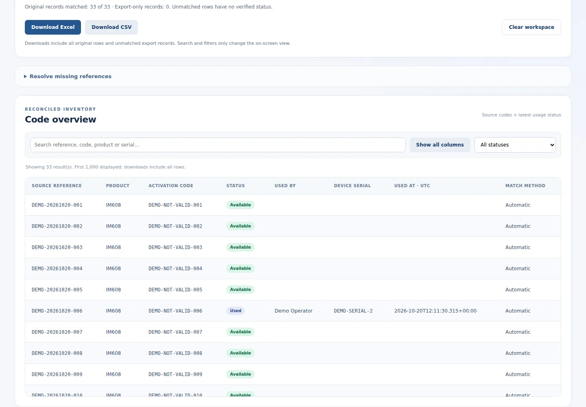

The problem
Separate spreadsheets make it difficult to trace which activation codes have been assigned, used or remain available.
Autel Code Manager & Code Tracker combines role-based operational workflows with a local reporting companion, so a manager can follow each code from its original spreadsheet to recorded usage.

Separate spreadsheets make it difficult to trace which activation codes have been assigned, used or remain available.
A persistent source reference connects each imported row to a status export, with review states for ambiguous or missing matches.
Full-stack implementation, role and ownership checks, encryption integration, operator workflows and the offline reconciliation UI.
Import inventory, assign it to operators, record a device serial when used, and review role-based access and safe audit metadata.
Load the original file and usage export into a standalone HTML tool. Match source references, inspect states and download a combined Excel report.
Unmatched is a review state, not available stock. Manual pairings require operator confirmation and remain explicitly labeled.
The online status export excludes activation values. The local report adds codes from the original input file for authorized managerial review.